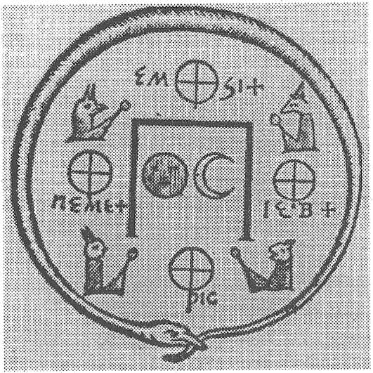
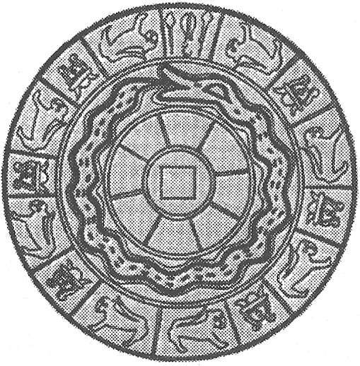

Geçen bölümden çıkardıklarımızı tekrarlamak gerek çünkü evren içindeki bizleri anlamak için bir temel sağlıyor: Kendine gönderme yapışımızın benliği, bir dolanık hiyerarşiden dolayıdır; şuurumuz ise özne-nesne ayrımının ötesindeki Varlığın şuurudur. Evrende başka hiçbir şuur kaynağı yoktur. Kendine gönderme sürecinin benliği ve kaynak şuurun şuurluluğu birlikte, bizim benlik şuuru dediğimiz şeyi oluştururlar.
Bir anlamda, kadim bir hakikati yeniden keşfediyoruz. İnsanlığın benlik şuurunun dolanık hiyerarşiden kaynaklandığını üstü örtülü de olsa hep bilmiş olması şaşırtıcıdır. Birçok kültürde var olan bu bilgi, farklı yer ve zamanlarda kendi kuyruğunu ısıran bir yılanın arşetipik resminde ortaya çıkar (Şekil 34).1
Bu, bizi görünürdeki nesnelerden ayrı olan bir benlik veya bir öznenin deneyimine götüren tezahürat dünyasının ortaya çıkışıdır. Yani özne ve nesne, beyin-zihnin kuantum halinin başlangıçtaki çöküşünde aynı anda tezahür ederler. Romantik şair John Keats'in sezmiş olduğu gibi: "Dünyayı gör istediğin gibi/Adeta ruhların oluştuğu bir vadi."


Şekil 34. Uroboros. [Eric Neumann'ın The Origins and History of Consciousness (Şuurun Kökeni ve Tarihi) adlı kitabından, çeviri R. F. C. Hull. Bollinger dizisi XLII, copyright 1954, yenilenmiş Princeton UP baskısı 1982. Princeton UP izniyle kullanılmıştır.]
İçkin tezahürat dünyası olmasa hiçbir can, kendisini algıladığı nesnelerden ayrı deneyimleyen hiçbir benlik olmazdı.Anlatım uygunluğu sağlamak amacıyla bu durumu tarif etmek için yeni bir terim benimsenmelidir. Çökmeden önce özne, fiziksel ya da zihinsel deneyim nesnesinin arşetiplerin- den farklılaşmış halde değildir. Çökme özne-nesne ayrımını doğurur ve bu da kuantum benlik diyeceğimiz asli "Ben'im" farkındalığına yol açar. (Şüphesiz, ayrıca kuantum benliğin farkındalığının çökmeyi oluşturduğunu da söyleyebiliriz. Kendine göndermenin doğasında bulunan döngüyü hatırlayın.) Şuur, öznenin birliğinin hala kalıcı olduğu kendi kuantum benliğinin belirginleşmiş kendine göndermesi ile özdeşleşir. Sonraki soru şudur: Bizim diğerlerinden ayrıymış gibi algıladığımız benliğimiz, yani kendimize özgü deneyim referans noktamız, bireysel egomuz nasıl doğar?
Matematikçi G. Spencer Brown, "Bildiğimiz dünyanın kendisini görmek üzere (ve dolayısıyla görebileceği tarzda) inşa edilmiş olduğu olgusundan kaçamayız. Bunu yapmak için, kendisini ilk başta en azından bir gören hale ve en azından bir görülen hale ayırması gerektiği açıktır," der.2 Bu özne-nesne ayrımı mekanizmaları, dolanık hiyerarşinin ve ego dediğimiz benliğin geçmiş deneyimlerimizin oluşturduğu yüzey ile özdeşleşmesinin oluşturduğu çifte illüzyondur. Bu ego kimliği nasıl doğar?
Beyin-zihnin bir çifte kuantum sistemi/ölçüm aygıtı olduğunu söylemiştim. Öyle ki, bütün evrenin kendine gönderme yapışının meydana geldiği özgün yerdir. Evren, sayemizde kendini fark eder. Evren kendisini bizde ikiye ayırır; nesneye ve özneye. Beyin-zihin tarafından yapılan bir gözlem üzerine şuur, kuantum dalga fonksiyonunu çökertir ve von Neumann zincirini sonlandırır. Von Neumann zincirini, şuurun dalga fonksiyonunu düalistik değil, kendine gönderme yaparak çökerttiğini kabul ederek çözeriz. Kendine gönderme yapan bir sistemin, basit bir kuantum nesnesi ve ölçüm aygıtı birleşiminden farkı nedir? Cevap çok önemlidir.
Beynin ölçüm aygıtı, diğer tüm ölçüm aygıtları gibi, her çökmenin, yani belirli bir uyartıya tepki verdiğimizde edindiğimiz her deneyimin bir anısını çıkarır. Ayrıca, eğer aynı veya benzer bir uyartı yine gelirse, beynin klasik plağı eski anıyı çalar; bu tekrar çalma, kuantum sistem için ikincil bir uyartı haline gelir ve buna tepki verir. Klasik sistem yeni tepkiyi ölçer ve bu böyle sürer gider. Bu tekrarlanan ölçüm ilişkisi beyin-zihnin kuantum sisteminde temel bir değişime yol açar; artık rejeneratif değildir, yenilenmez.3
Önceden deneyimlenen, öğrenilen her bir tepki, aynı tepkinin tekrar verilme olasılığını güçlendirir. Sonuç şöyledir: Yeni, öğrenilmemiş bir uyartı için beyin-zihnin kuantum sisteminin tepkisi diğer herhangi bir kuantum sistem gibidir. Ancak, bir uyartı öğrenildiğinde bir ölçümün tamamlanmasından sonra, ikili sistemin kuantum mekaniği halinin önceki bir hafıza haline benzerliği iyice artar. Başka bir deyişle, öğrenme (ya da önceki deneyimler) beyin-zihni peşin hükümlü hale getirir.
Şüphesiz bu açıklama, şu an geçerli olan beyin-zihin için önerilmiş basit davranış şartlanması modeli içinde teorik bir analizdir. Belirli bir uyartıya verilen tepkinin şartlanılmış hale gelmesinden önce, biz onu bilmem kaçıncı kez deneyimlemeden önce, şuurun tepkilerimizi içinden seçtiği olasılık havuzu tüm zamanlar, tüm yerler ve tüm insanlar için bildik olan tüm zihin hallerini içerir. Öğrenmeyle, şartlanmış tepkiler yavaş yavaş diğerlerine göre daha çok ağırlık kazanır. Bireysel zihnin öğrenilmiş, şartlanılmış davranışlarının gelişim süreci budur.
Bir görev öğrenilir öğrenilmez, onu içeren herhangi bir duruma çok benzeyen geçmiş olayın koşullanmış bir tepki tetikleme olasılığı %100'e yaklaşır. Bu sınırda, kuantum sistem/ölçüm aygıtı ikilisinin davranışı gerçekten klasik hale gelir. Burada Bohr’un tamamlayıcılık ilkesinin beyin-zihinde- ki türevini görüyorsunuz. Yeni bir deneyimin sınırlarında, beyin-zihnin tepkisi yaratıcılıktır. Öğrenmeyle, koşullanılmış bir tepkinin olasılığı artarak güçlenir; ta ki tepki tecrübe edilen olayın tekrarlanan sayısı sonsuza giderkenki limitinde, davranışçılığın da öne sürdüğü gibi, tamamen koşullanılmış hale gelene dek. Bu önemlidir çünkü davranışçılık tarafından öne sürülen klasik koşullanma, daha genel olan kuantum manzarasının özel bir vakası olarak geri gelmiştir.
Bireyin fiziksel gelişiminin hayli erken dönemlerinde, birçok öğrenilmiş kalıp birikir. Yeni ve yaratıcılığa açık deneyimler (özellikle öğrenilmemiş uyartılar için) şartlanılmamış kuantum tepkiler mevcut olmasına karşın beyin-zihnin tutumunda baskın hale gelirler. Ama kuantum bileşenin yaratıcı potansiyeli kullanılmadığında beyin-zihnin etkileşen bileşenlerinin dolanık hiyerarşisi aslında öğrenilmiş, klasik kalıpların basit hiyerarşisi haline gelmektedir: Zihinsel kalıplar, birbirlerine hatları belirgin bir hiyerarşi içinde tepki verirler. Bu safhada, şuurlu bir deneyimi "seçen kimdir" sorusu bakımından yaratıcı belirsizlik ortadan kalkar; seçen ve hür iradeye sahip olan ayrı, bireysel bir benlik (ego) sahibi olduğumuzu farz ederiz.
Bu kavramı daha iyi açıklamak için, öğrenilmiş bir uyartının beyin-zihne geldiğini varsayalım. Cevap olarak, kuantum sistem ve onun klasik ölçüm aygıtı tutarlı süperpozisyonlar halinde genişlerler ama genişleme eğilimleri, öğrenilmiş tepkinin lehinedir. Klasik bilgisayarların hafızaları da uyarıcıyla ilişkili öğrenilmiş kalıplarla tepki verirler. Asli deneyim ile ilişkili çökme olayından sonra bir dizi ikincil çökmeler meydana gelir. Kuantum sistem klasik, öğrenilmiş kalıplara cevap olarak nispeten muğlak olmayan tepkiler vermeyi geliştirir; bunların her biri büyütülür ve çöker. Bu işlemler dizisi belirgin bir niteliğe sahip ikincil deneyimler halinde sonuçlanırlar, örneğin alışkanlık edinilmiş motor faaliyetler, düşünceler ("Bunu ben yaptım" gibi) vb. İkincil olaylara katkıda bulunan öğrenilmiş kalıplar hala dolanık hiyerarşinin bir parçasıdırlar çünkü onları izleyerek sebep-sonuç zincirlerinde, kuantum sistemin ve onun yerel olmayan şuur tarafından çökertilmesinin rolüne karşılık gelen kırılmayı bulabiliriz. Ancak bu süreksizlik örtülüdür ve (sahte) benliğin hür iradesinin bir eylemi olarak yorumlanır; daha sonra bunu yerel olmayan öznenin öğrenilmiş kalıplarla ilişkili sınırlı bir tekil benlik ile (sahte) özdeşleşmesi izler. Ego dediğimiz işte budur. Açıkçası, ego bizim klasik benliğimizdir.
Emin olun, şuurumuz nihai anlamda birleştiricidir ve aşkın düzeydedir; artık bunu bozulmamış düzey olarak kabul ediyoruz. Ancak fiziksel zaman-mekanın içinden (beyin- zihnimizin klasik kalıplarının bakış açısından) bakılınca, tekil kimliğimiz, egomuz tarafından ele geçiriliriz. İçeriden bakılınca, sistemimizin dolanık hiyerarşik doğasının pek azı keşfedilebilir; farz edilen sınırlılığımızı örtmek için hür iradeye sahip olduğumuzu iddia ederiz. Sınırlılık, birbiri üstünde nedensel etkide bulunan öğrenilmiş kalıpların bakış açısını kabul etmektir. Cehaletten dolayı, kozmik öznenin sınırlı bir versiyonu ile özdeşleşiriz; "Ben bu zihin-bedenim," çıkarımına varırız.Ben gerçek deneyimleyen (mekansız şuur) olarak zaman-mekanda yerelleşmiş olan beyin-zihnimi aşarak sistem dışından, beyin-zihnimin sistemlerinin dolanık hiyerarşisinin örtüsünün ardından işlerim. Diğerlerinden ayrı olma halim -egom- sadece bu kozmik "Ben"in hür iradesinin bariz etkeni olarak, zaman-mekandaki kuantum beyin-zihnin bir andaki durumunun çöküşünün temsil ettiği süreksizliği örterek ortaya çıkar. Wallace Stevens’ın şiirinden bir alıntı kişinin başkalarından ayrı oluşu sorusuyla ilgilidir:
Dediler ki, "Bir gitarın var mavi
Çalmazsın şarkıları oldukları gibi."
O dedi ki, "Şu halleriyle şarkılar
mavi gitarda değişiyorlar."4
Şu halleriyle (saf, bölünmemiş kozmik şuur gibi) varlıklar ayrı, tekilleşmiş ego olarak tezahür ederler. Tekil beyin-zihnin öğrenilmiş kalıplarının basit hiyerarşisinin mavi gitarında değişirler.
Ayrı benlik, şuur için sadece ikincil bir kimliktir çünkü şuurun yerel olmayan, yaratıcı potansiyeli ve kuantum zihnin becerikliliği asla tamamen ortadan kaybolmaz. Bunlar benliğin asli kuantum halinde mevcut kalırlar.
Klasik benlik ve kuantum benlik
Psikolog Fred Attneave egoyu şöyle tanımlar: "Şuurun geçmiş durumları hakkındaki depolanmış bilgi şuura çağrılabilir. Demek ki şuurun kendi yansımalarını hafıza aynasında görmesi ancak (benzetmeyi biraz ihlal ederek) bir gecikmeyle mümkün hale gelir. Egonun bu bakımdan tanımlanması gerektiğine inanıyorum."5
Özellikle Attneave tarafından sözü edilen gecikmeye dikkat edin: Bu, bir mekan-zaman olayının (kuantum modun başlangıcında) çökmesi ve ikincil klasik modun sözel bildirimi ya da egonun kendi iç gözlemine dayalı deneyimi arasındaki tepki verme zamanıdır. Bu iç gözlem zamanı kavramını destekleyen etkileyici kanıtlar vardır.
Nörofizyolog Benjamin Libet, beyin cerrahı Bertram Feinstein ve meslektaşları, San Francisco'daki Mount Zion Hastahanesinde beyin ameliyatı geçiren hastalardaki içgözlem zamanı fenomeni hakkında ilginç keşiflerde bulundular.6 (Beyin ameliyatına alman hastalar ameliyat sırasında uyanık kalabilirler çünkü acı hissetmek söz konusu değildir.) Libet ve Feinstein hastanın derisi üstüne yapılan bir dokunma uyartısının, sinir patikaları boyunca yol olan sivri uçlu elektriksel faaliyet halinde beynine ulaşana dek geçirdiği süreyi ölçtüler. Bu, saniyenin 1/100'ü idi. Libet ve Feinstein’ın fark ettiği şey, hastanın bu uyartının şuurlu biçimde farkına vardığını sözleriyle bildirinceye kadar yaklaşık yarım saniyenin geçmiş olmasıydı. Tam tersine, böyle deneklerin (bir düğmeye basmak ya da "git" kelimesini söylemek gibi) fiziksel tepkileri saniyenin sadece 1/10 veya 2/10'u tutmaktadır.7Libet'in deneyleri, normal klasik ego-benliğin şuurlu deneyimin ikincil farkındalığı sürecinden doğduğu kavramını desteklemektedir. Davranışsal tepki ve bunun sözle bildirilmesi arasındaki yaklaşık yarım saniye, ikincil farkındalığı işletmek için harcanan süredir; bu, Ben şu'yum türünden içgözlem için geçen (öznel) tepki süresidir. İkincil süreçlerle meşguliyetimiz (gecikme bunu göstermektedir) kuantum benliğimizin farkına varmamızı ve işleyişimizin kuantum düzeyinde erişilebilir olan saf zihin hallerini deneyimlememizi zorlaştırır. Birçok meditasyon uygulaması bu gecikmeyi ortadan kaldırma ve bizi bu saf zihin halleriyle doğrudan kendi öyleliklerinde (Sanskritçe tathata) temasa geçirme amaçlıdır. Kanıtlar (deneme kabilinden de olsa) meditasyonun asli ve ikincil süreçler arasındaki süreyi azalttığını göstermektedir.8
İkinci dereceden kanıtlar bu gecikme azaldığında vecd deneyimlerinin meydana geldiğini göstermektedir. George Leonard atletlerin vecd deneyimlerini bildirir.9 Örneğin, bir beyzbol oyuncusu sıra dışı bir top yakalama gerçekleştirdiğinde vecd hali (genelde varsayıldığı gibi), başarının sonucunda değil de kendi kuantum benliğini göz ucuyla görebilmesini sağlayan (ve topu yakalayışını kolaylaştıran) tepki zamanının azalmasının sonucudur. Sıra dışı yakalayış ve vecd aynı anda doğarlar; her biri aslında diğerine neden olmaktadır. Maslow'un zirve deneyimler hakkındaki verileri -kozmik bir Varlığın birliği ve uyumunda kök salınış benliğin doğrudan aşkın deneyimleri (örneğin yaratıcı a-ha! deneyimi)- azalan tepki zamanı ve deneyimcinin kuantum benliği terimleriyle açıklanabilir.10
ikincil içgözlemin gecikmesi bizim şuuru egoyla deneyimleyişimizi sürekli hissetmemizi sağlar. Şuur akıntısı, düşünmeden iç gözlem muhabbetinin sonucudur. (Deneyim biriktirmek için ne büyük bir bedel!) Şuur, beyin-zihnin dalga fonksiyonunun çökmesi ile kendisini özne-nesne olarak ikiye ayırır. Çökme, zaman ve mekandaki süreksizlik olayıdır ama biz özne-nesne ayrımını sürekli, klasik ego modunda tek taraflı olarak deneyimleriz. Kuantum modda var olan deneyimin yakınlığının güç bela farkındayızdır; T. S. Eliot buna aşağıda okuyacağınız şiirinden yaptığım alıntıda "durağan nokta" demiş:
Ne bir yerden ne bir yere; durağan noktada, ordadır raks,
Ama ne tutuş vardır ne hareket. Buna durağanlık demeyin,
Orada geçmişle gelecek birleşir...
...O nokta olmasa, durağan nokta,
Raks olmazdı ki hiç, oysa yalnız raks var.11*
* Çorak Ülke ve Dört Kuartet, çeviri: Suphi Aytemur, Adam Yay., 1990
Maya artık açıklanmıştır.12 İçkin dünya maya değildir; ego bile maya değildir. Gerçek maya, ayrı olma halidir. Bütünden gerçekten ayrı olduğumuzu hissetmek ve düşünmek illüzyondur. Kuantum işlevciliğinin son hedefine vardık: ayrı benliğimiz için bir açıklama bulmak. Görünürde basit bir hiyerarşi oluşturan klasik öğrenilmiş kalıplarıyla, şuur bu öğrenilmiş kalıplarla ve belirli bir beyin-zihnin bireysel deneyimleriyle özdeşleşen egoyu (Ben bu'yum hali) edinir. Böyle ayrı bir ben, Sperry'nin işaret ettiği gibi, belirginleşmiş bir fenomenin özelliklerine sahiptir. Dünyadaki deneyimlerimizin sonucu olan öğrenilmiş programlarımızın içgözlemsel etkileşiminden ortaya çıkar ama bir şaşırtmaca var. Ayrı benin kuantum benliğinkinden ayrı hiçbir hür iradesi ve de nihai anlamda birleştirici şuuru yoktur.
Umarım artık kuantum işlevciliğinin özünü görebiliyorsunuz. Geleneksel beyin-zihin teorileri şuur kavramından sanki utanılacak bir şeymişçesine kaçmıyorken, kuantum işlevcilik işe şuurla başlar; davranışçıların beyin-zihnin eylemlerini sınırlayıcı bir durum olarak tarif etmelerini kabul eder ve hatta egonun hür iradesinin koskoca bir kandırmaca olduğu konusunda materyalistlerle aynı fikri paylaşır. Bu yeni teori beyin-zihni anlamaya yardımcı olmada, benliğin kuantum modunu kabullendiğinden dolayıdır ki, çok daha beceriklidir.Materyalist psikologlar sadece egoya inanırlar, bunda bile temkinlidirler. Çoğu kuantum benliğin hiç olmadığını söyleyecektir. Ama gelin, kuantum benliğe yardım edecek bir iksirin olduğunu hayal edelim. Hayat o zaman nasıl olurdu? Okuyacağınız mesel, bu soruyla ilgili.
Klasik mekanikçinin aşkı: bir mesel
Bir zamanlar klasik mekaniğe ve klasik mantığa inanan bir kadın vardı. Arkadaşlarının, hatta bazen kocasının idealist felsefe, mistisizm ve benzeri konularda söyledikleri onu rahatsız etmekteydi.
İnsanlarla kurduğu ilişkilerde, onların ne istediklerini anlayamıyordu. Anne ve babasına her zaman iyi davranmıştı ama onlar kendisini paylaşmasını bekliyorlardı. Ne demek istediklerini anlamıyordu. Cinsellikten hoşlanıyordu ama kocası güven ve sevgiden çok fazla söz ediyordu. Bunlar sadece kelimelerdi. Böyle sözlerin ne yararı vardı ki? Bazen, kocasıyla girdiği cinsel ilişkiden sonra duygusal yumuşaklık hislerinin istilasına uğruyordu. Bunların buğulu gözlerle sessizlik içinde kendisine baktıkları sırada ana babasının hissettiği türden olduğunu düşünüyordu. Ve bunların vıcık vıcıklığın- dan nefret ediyordu.
Bazı arkadaşlarının neden hayatlarında anlam aradıklarını anlayamıyordu. Bazıları sürekli sevgiden ve estetikten söz ediyordu. Onları kızdırma korkusuyla kahkahalarını bastırmak zorunda kalıyordu ama onların saf olduklarını biliyordu. Cinsellikten ayrı aşk olamaz diye düşünüyordu. Yine de bazen okyanusa farkına varmadan bakakaldığında, okyanusun enginliğiyle birleşerek eridiğini hissediyordu. O anda varoluşunun bir iki dakikasını yitiriyor ve sevgiye gömülüyordu. Bu anlardan nefret ediyor ve onlardan korkuyordu.
Rahatsızlık duygusunu birkaç kez anlatmaya kalmıştı ama içini açtığı kişiler onun sıradan egosunun ötesindeki içsel kuantum benliğinden söz etmişlerdi. Böyle ele geçmez bir şeye asla inanamazdı. Bir tür içsel benliği olsa bile, hiçbir parçasını istemiyordu. Derken bir gün insanı kuantum benliğinden kopartan yeni keşfedilmiş bir iksir olduğunu öğrendi.
Hemen iksiri keşfeden kişiyi buldu.
"İksiriniz vıcık vıcık şefkat duygusuna batmadan cinsellikten zevk almama yardımcı olacak mı?"
"Evet," dedi iksiri bulan adam.
"İnsanlara güvenmenin yarattığı güvensizliğe tahammülüm yok. Daha ziyade değiş tokuşa veya yedeklemelere güvenmeyi tercih ederim. İksiriniz insanlara güvenmek zorunda kalmadan yaşamamı sağlayacak mı?"
"Evet," dedi iksiri bulan adam.
"Eğer iksirinizi alırsam, sözde evrensel sevgi hisleriyle başa çıkmak zorunda kalmadan okyanusun güzelliğinin tadını çıkarabilecek miyim?"
"Her zaman," dedi iksiri bulan adam.
"O zaman iksiriniz tam bana göre," dedi kadın hevesle içerek.
Aradan zaman geçti. Kocası kadında bazı değişiklikler hissetmeye başladı. Davranışları aynı gibiydi ama onun titreşimlerini alışmış olduğu haliyle hissedemiyordu. Derken bir gün kadın adama kuantum benliğinden kopmak için bir iksir içtiğini anlattı. Adam derhal karısına iksiri veren adamı buldu. Karısının kuantum yaratıcılığını tekrar kazanmasını istiyordu.
Kadına iksiri veren adam, onu bir süre dinledi ve sonra şöyle dedi: "Size bir hikaye anlatayım. Bir zamanlar bacaklarından birinde dayanılmaz ağrılar olan bir adam vardı. Doktorlar çare bulamıyorlardı. En sonunda bacağı kesmeye karar verdiler. Uzun saatler boyu baygın kalan adam uyandığında doktorların kendisine şaşkın şaşkın baktığını gördü. Kendisini hala pek iyi hissetmediğinden, doktorlara 'Eee? Ne oldu?' diye sordu.
Doktor 'Size bir iyi bir de kötü haberim var. İlk önce, kötü haber. Yanlış bacağı kestik.' Hasta boş bir ifadeyle ona bakıyordu ama doktor hemen onu teselli etti: 'Şimdi de iyi haber. Hasta bacağınızın durumu o kadar da kötü değilmiş. Kesmeye hiç gerek yok. Onu kullanabileceksiniz.'"
Kadının kocası şaşkın şakın bakıyordu. Karısına iksiri veren adam devam etti: "Karınız kuantum benlikle birlikte gelen yaşamın yaratıcı belirsizliğini sevmiyordu, böylece kendisini ondan kurtardı. Yani tek bacakla yürümeyi tercih etti. Bu sizin için kötü haber. Ama şimdi de iyi haber. Sizin gibi kocalar için bir reçetem var. Onu, kendisinden istediğiniz ruh dolu davranışa koşullandırabilirim. Eğitimim sayesinde, size hem çay hem de sempati verecektir."
Adam pek sevinmiş. Ve öyle yapmışlar. Karısı yine eski haline dönmüş gibiymiş. Arada bir, iksiri içmeden önce yaptığı gibi kocasına sevgi sözcükleri fısıldıyormuş. Ama onun "ruh dolu" kocası yine de onun titreşimlerini hissedemiyor- muş.
Adam, karısına iksiri veren ve ona sevgi davranışlarını öğreten adama tekrar gitmiş. "Ama ben aslında sadece davranışla tatmin olmadım. Söze gelmeyecek olan bir şey istiyorum. Onun titreşimlerini hissetmek istiyorum," diye sızlanmış adam.
Adam "Yapılacak tek şey var. Size de iksirden verip, karınıza yaptığım gibi sizi de eğitebilirim."
Başka seçenek olmadığından, adam kabul etmiş. Ve sonra bu çift sonsuza dek mutlu yaşamışlar. Kasabalarındaki hiç kimse daha önce böylesine sevgi dolu bir çift görmemişmiş. Hatta kasabalarındaki kulübün ömür boyu üyesi seçilmişler, bu daha önce kimseye bahşedilmemiş bir onurmuş.13
Endişelenmeyin, böyle bir iksir asla bulunmayacak. Yine de dur durak bilmeyen ve gereksiz olan kültürel, politik ve toplumsal davranış kalıplarının koşullandırması, kuantum benliğin bize sunduğu potansiyeli köstekleyerek meseldeki iksirin işini görüyor.
Öyleyse sonraki soru şu: Materyalizmin kabul ettiğinden daha büyük olduğumuza dair ortaya çıkan bilginin sorumluluğunu nasıl üstlenebiliriz? Buradan nereye gideceğiz? Yeni bölümün konusu bu olacak.